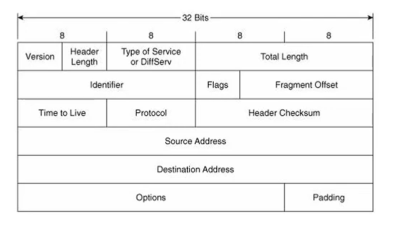
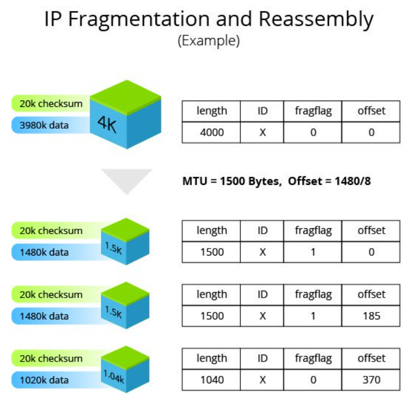
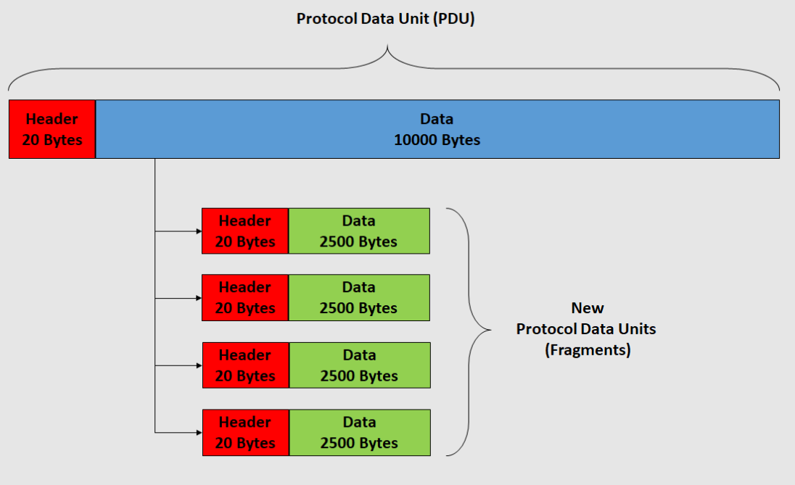
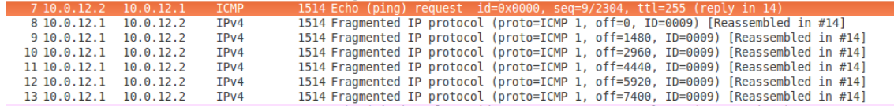
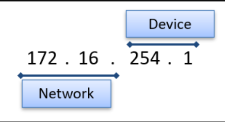
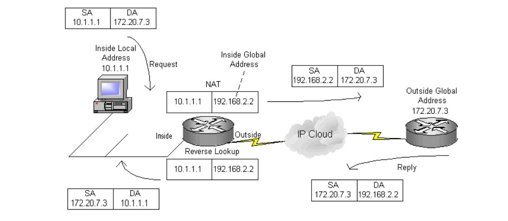
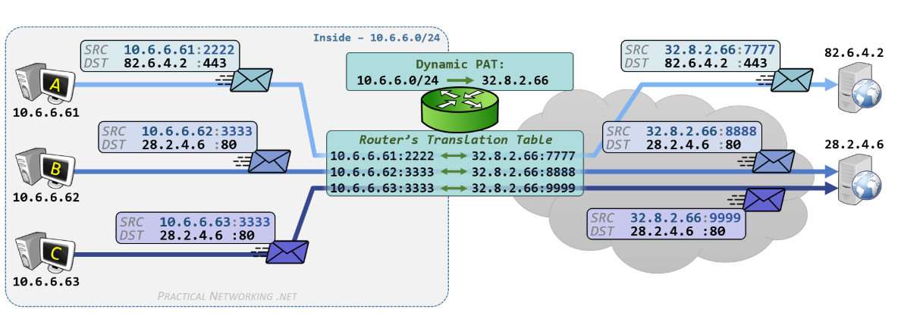

05 — IPv4: Internet Protocol (livello 3)
Header IPv4, frammentazione, CIDR, subnetting e NAT/PAT
Sommario
Nota
Siamo nel Network Layer (L3).
Mentre il MAC Address (L2) serve per spostarsi all’interno di una LAN (Switch), l’Indirizzo IP (L3) serve per identificare univocamente un host su scala globale e permettere il Routing tra reti diverse (tramite Router).
1. Anatomia del Pacchetto IPv4

Possiede Header e payload 20-65535 byte
- Il pacchetto IP è composto da Header (intestazione) + Payload (dati).
- Dimensione Totale: Min 20 byte (solo header) - Max 65.535 byte.
Campi dell’Header
| Campo | Bit | Descrizione |
|---|---|---|
| Version | 4 | Indica la versione IP (solitamente 4, ovvero 0100). |
| IHL (Header Length) | 4 | Lunghezza dell’header. Conta le “parole” da 32 bit. Minimo 5 (5*4=20 byte). |
| ToS (Type of Service) | 8 | Indica la priorità del pacchetto (es. QoS per VoIP o Streaming). Oggi chiamato DSCP. |
| Total Length | 16 | Dimensione totale del pacchetto (Header + Payload). |
| Identification | 16 | ID univoco per riassemblare i frammenti (vedi Frammentazione). |
| Flags | 3 | Bit di controllo per la frammentazione (DF, MF). |
| Fragment Offset | 13 | Posizione del frammento corrente rispetto al pacchetto originale. |
| TTL (Time To Live) | 8 | “Vita” del pacchetto. Ad ogni salto (hop) tra router viene decrementato di 1. Se arriva a 0, il pacchetto viene scartato e il router invia un ICMP “Time Exceeded”. Serve a evitare loop infiniti. |
| Protocol | 8 | Indica quale protocollo di Livello 4 è incapsulato nel payload. |
| Header Checksum | 16 | Controllo integrità solo dell’header IP. Non controlla i dati (se ne occupa TCP/UDP). |
| Source / Dest IP | 32 | Indirizzo IP del mittente e del destinatario. |
| Options | Var | (Opzionale) Informazioni aggiuntive di routing/sicurezza (raramente usato oggi). |
Protocol Numbers:
Registro IANA dei numeri di protocollo
Mi permette di vedere che protocollo mi ha generato i dati che vengono incapsulati dall’header:
Per esempio:
1= ICMP (Ping, Errori)6= TCP (Transmission Control Protocol)17= UDP (User Datagram Protocol)
2. Frammentazione IPv4
Quando un pacchetto supera l’MTU (Maximum Transmission Unit, solitamente 1500 byte su Ethernet), il Router deve spezzarlo in frammenti più piccoli (A meno di jumbo)
Ogni frammento avrà il suo header IP (quasi identico all’originale) con modifiche a questi 3 campi:
a. Identifier (16 bit)
Un numero casuale (ID) che viene copiato uguale in tutti i frammenti dello stesso pacchetto originale. Serve al destinatario per capire quali pezzi vanno insieme.
b. Flags (3 bit)
- Bit 0: Reserved (sempre 0).
- Bit 1 (DF - Don’t Fragment): Se settato a 1, dice “Vietato frammentare”. Se il pacchetto è troppo grande e DF=1, il router lo scarta e manda errore ICMP.
- Bit 2 (MF - More Fragments):
1= “Ce ne sono altri dopo di me”.0= “Io sono l’ultimo pezzo”.
c. Fragment Offset (13 bit)
Indica dove posizionare il payload di questo frammento nel buffer di ricostruzione.
Regola dell'8: L’unità di misura dell’offset sono blocchi da 8 byte.
- Esempio: Se il primo frammento porta 1480 byte di dati.
- Il secondo frammento avrà Offset = 1480 / 8 = 185.
- Chi riceve moltiplica per 8 per trovare la posizione in byte.



Sniffing del pacchetto frammentato su Wireshark
Approfondimento Wireshark & Frammentazione:
Youtube Link - IPv4 Fragmentation Analysis
3. Indirizzamento e CIDR
Struttura IPv4
- Dimensione: 32 bit (4 Byte).
- Spazio indirizzi: $2^{32} \approx 4.3$ miliardi di indirizzi. (Esauriti → Soluzioni: NAT/PAT e IPv6).
Rappresentazioni:
- Decimale puntata:
192.168.1.1(Standard umano). - Binaria:
11000000.10101000.00000001.00000001.x.x.x.xogni x si chiama ottetto binario
- Esadecimale:
0xC0.A8.01.01(Spesso usata nei log di sistema o errori).
CIDR (Classless Inter-Domain Routing) e Subnet Mask

esempio con CIDR /16
Nota
Concetto Fondamentale:
La Subnet Mask è il CIDR “sotto mentite spoglie”.
Dire
**/24**oppure dire255.255.255.0è esattamente la stessa cosa.
- CIDR (
/n): Dice quanti bit sono impostati a 1 (ON) partendo da sinistra.- Subnet Mask: È la traduzione in decimale di quei bit.
- Wildcard: complementare della subnet Mask (per router CISCO)
255.255.255.0->0.0.0.255
È il metodo standard per dividere l’indirizzo IP in due parti: Rete (Network) e Host.
Si indica con la notazione slash /n.
Formula: Indirizzo IP / CIDR (in bit)
Esempio: 192.168.13.2 /24
- /24 significa che i primi 24 bit sono fissi (Network Prefix).
- I restanti 8 bit $(32 - 24 = 8)$ sono per gli Host (Suffix).
| Parte | Valore | Descrizione |
|---|---|---|
| Network (Prefix) | 192.168.13 |
Identifica la sottorete. Tutti gli host qui hanno questo inizio uguale. |
| Host (Suffix) | .2 |
Identifica il dispositivo specifico. |
Indirizzi Riservati (Non assegnabili agli host)
In ogni subnet /n, due indirizzi non si possono usare per i PC:
- Network Address (Tutti i bit host a 0): Identifica la rete stessa (es.
192.168.13.0). - Broadcast Address (Tutti i bit host a 1): Indirizzo per parlare con tutti nella subnet (es.
192.168.13.255).
Default gateway
Il primo indirizzo IP utilizzabile, viene dato al router di riferimento (default gateway)
- Se il pacchetto deve attraversare il layer 3 (Network), allora l’host lo manda all’IP default gateway (quello del router) che poi farà il forward nella rete
- Senza default gateway → pc non sa dove mandare i pacchetti
Esempio di calcolo
IPv4 + CIDR iniziale: 192.168.13.122/27
- (27 bit a sinistra fissi). Rimangono 5 bit variabili. 2^5 = 32 indirizzi codificabili
- Tolgo Network address e Broadcast address → 30 indirizzi codificabili
Converto in binario: 192.168.13.122 → 11000000.10101000.00001101.01111010
Primi /27 bit fissi (da sinistra) → 11000000.10101000.00001101.011.....
- 5 bit a destra partono da
00000→ Network address192.168.13.96 - 5 bit a destra finiscono a
11111→ Broadcast address192.168.13.127 - Default Gateway
192.168.13.97(Il primo disponibile) - Dunque, indirizzi IP utilizzabili → [
192.168.13.97,192.168.13.126]
Netmask (/27 bit fissi a 1)
192.168.13.122/27 → 11111111.11111111.11111111.11100000 → 255.255.255.224
Wildcard (complementare Netmask)
11111111.11111111.11111111.11100000 → 00000000.00000000.00000000.00011111 → 0.0.0.31
Calcolo:
Video: calcolo di subnet, netmask e wildcard
Indirizzi Pubblici vs Privati e NAT (Network Address Translation)
Per risparmiare indirizzi IP (che sono finiti), Internet usa un sistema a due livelli.
1. Indirizzi Privati (LAN)
- Sono gratuiti e liberi. Chiunque può usarli a casa o in ufficio.
- NON sono instradabili su Internet: Se un router pubblico vede un pacchetto con questi IP, lo scarta.
- Servono solo per comunicare dentro la rete locale o arrivare fino al Gateway (Router).
| Tipo | Range | Utilizzo tipico |
|---|---|---|
| Privato (10/8) | 10.0.0.0 - 10.255.255.255 |
Grandi aziende / datacenter |
| Privato (172.16/12) | 172.16.0.0 - 172.31.255.255 |
Università / Docker / VPN |
| Privato (192.168/16) | 192.168.0.0 - 192.168.255.255 |
Reti domestiche |
| Link-local | 169.254.0.0 - 169.254.255.255 |
APIPA quando il DHCP non è disponibile |
| This network | 0.0.0.0 - 0.255.255.255 |
Indirizzi speciali e route predefinita |
| Loopback | 127.0.0.0 - 127.255.255.255 |
Test locali sull’host |
| Multicast | 224.0.0.0 - 239.255.255.255 |
Comunicazioni multicast |
Indirizzi link-local:
- Sono utilizzati da APIPA (Automatic Private IP Addressing) quando l’host non riesce a contattare un server DHCP.
Indirizzi “this network”:
- ACL (Network Access Control List)
- BGP Flow spec (Border Gateway Protocol) → regole di traffico a livello router
- ES.
0.0.0.0 /0blocca qualunque indirizzo IP
- ES.
- nel DHCP discovery:
0.0.0.0indica IP source sconosciuto o che non conosco ancora
Loopback:
Usati per test locali senza scomodare server esterni
127.0.0.1→ Localhost- Per gestire una richiesta server, serve un gestore web server
- Es.
server apache2 start→ su macchina locale
2. Indirizzi Pubblici (WAN)
IANA (Internet Assigned Numbers Authority) → Assegna IP
- Sono univoci in tutto il mondo (come un numero di telefono).
- Vengono assegnati (e affittati) dal Provider Internet (ISP).
- Sono gli unici visibili su Internet.
3. Il ruolo del NAT (Network Address Translation)
Il meccanismo che permette a un IP privato di navigare:
- Il Router sostituisce l’IP Privato del mittente con il proprio IP Pubblico prima di uscire su Internet.
- Tiene traccia della conversazione in una tabella (NAT Table) per sapere a quale dispositivo della LAN restituire la risposta.
NAT/PAT (Port Address Translation) -Meccanismo più efficiente

La differenza con il NAT/PORT è che si utilizzano gli stessi IP con porte diverse
Nota
A cosa serve? Mentre il NAT base associa 1 IP privato a 1 IP pubblico, il PAT (o NAT Overload) permette a migliaia di dispositivi interni di navigare usando un solo IP Pubblico. Come fa? Usa le Porte (Livello 4) per distinguere le varie conversazioni.
L’Esempio Pratico (Navigazione Web)
Immaginiamo che il tuo PC voglia visualizzare una pagina web.
- IP Router (Pubblico):
82.10.20.30
1. REQUEST (Dal PC al Router)
Il PC genera il pacchetto originale nella LAN.
- IP SRC (Sorgente):
10.0.0.4(IP Privato del tuo PC). - PORT SRC:
13334(Porta effimera/randomica scelta dal Sistema Operativo). - IP DST (Destinazione):
128.119.40.186(IP Pubblico del Web Server, ottenuto tramite risoluzione DNS). - PORT DST:
80(Porta Well-Known per il protocollo HTTP).
2. TRANSLATION (Il Router modifica il pacchetto)
Il Router riceve il pacchetto, si rende conto che deve uscire su Internet, quindi esegue la traduzione (NAT-PAT) prima di spedirlo al Server Web.
- Nuovo IP SRC:
82.10.20.30(IP Pubblico del Router). - Nuova PORT SRC:
5001(Il Router assegna una nuova porta univoca per tracciare questa specifica connessione). - IP e PORT DST rimangono invariati.
Il Router registra questa modifica nella sua NAT Table:
| Inside Local (LAN) | Inside Global (WAN) | Outside Global (Server) |
|---|---|---|
10.0.0.4:13334 |
82.10.20.30:5001 |
128.119.40.186:80 |
3. RESPOND (Dal Web Server al Router)
Il Web Server elabora la richiesta e risponde. Non conosce il tuo IP privato, quindi risponde all’IP pubblico del Router.
- IP SRC:
128.119.40.186 - PORT SRC:
80 - IP DST:
82.10.20.30(Il tuo Router). - PORT DST:
5001(La porta che il Router aveva aperto prima).
4. REVERSE TRANSLATION (Dal Router al PC)
Il Router riceve il pacchetto. Legge la porta di destinazione (5001), consulta la NAT Table e capisce che quel pacchetto era in realtà per il tuo PC.
Riscrive gli indirizzi di destinazione:
- Nuovo IP DST:
10.0.0.4 - Nuova PORT DST:
13334
Il pacchetto viene infine consegnato al tuo PC, che non si è mai accorto di essere stato “tradotto”.

Esempio di una NAT-PAT che sfrutta le porte date dal SO